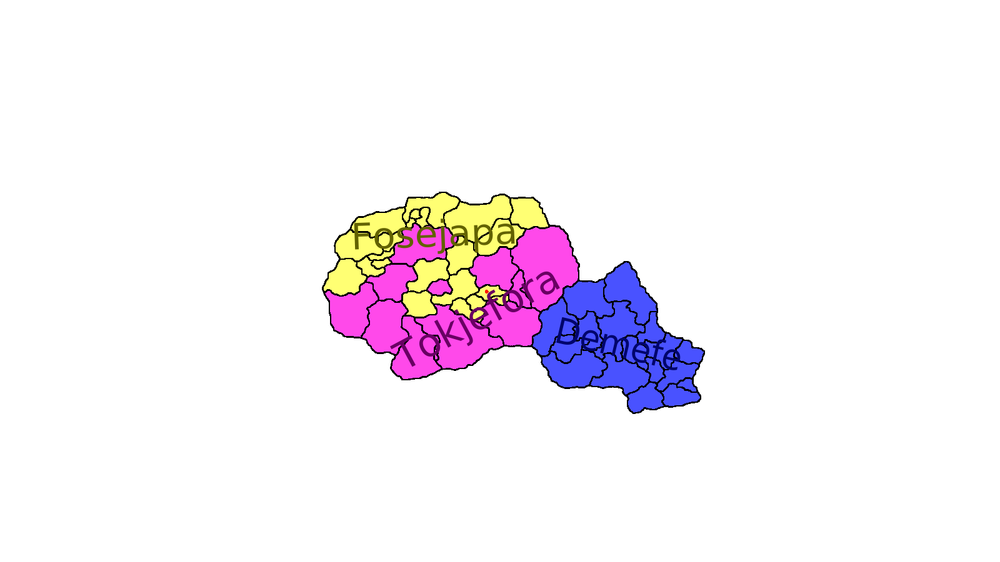

Der Erste Staat wurde im Jahr 1 gegründet, jedoch war es ein dezentralisierter Staat, welcher von verschiedenen lokalen Stämmen regiert wurde. In den ersten 2 Jahren passierte nicht viel, bis um das Jahr 3 zwei gegnerische Seiten aus dem alten Staat entstanden:
Beide Seiten wollten die Region unter sich vereinigen, weshalb sich die Fosejapa und Demefe mit immer wachsendem Hass entgegenstanden. Zumindestens am Anfang standen die zwei Länder sich jedoch größtenteils neutral gegenüber, und haben versucht eine diplomatische Lösung zu finden, jedoch wurde jeder Vertrag von mindestens einer Seite abgelehnt.
Trotz der Schwierigkeiten waren Interaktionen zwischen den Fosejapa und den Demefe relativ friedlich, bis im Jahr 6 einer der Fosejapa Stämme die Demefe angriff. Glücklicherweise für die Demefe, haben die adligen Tokjefora Stämme die Krieger aufgehalten und zurückgeschickt.
Doch im nächsten Jahr kam eine schreckliche Nachricht in die Hauptstadt der Demefe: Es gab eine Wahl in Fosejapa, ob der Krieg mit den Demefe fortgeführt werden sollte. Circa 70% der Stämme wählten für Krieg! Die Demefe waren komplett unvorbereitet, und wurden innerhalb einiger Monate komplett eingenommen und ausgeraubt.